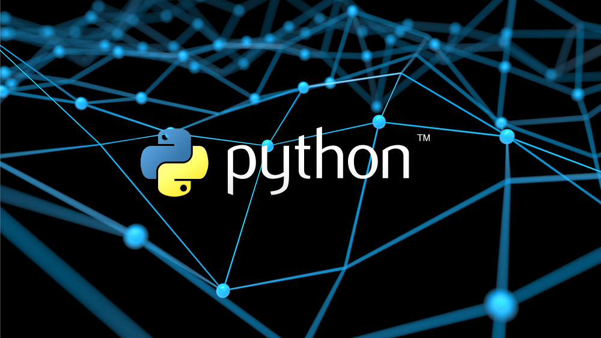

¡Curso avanzado de Python!

¿Estás listo para llevar tus habilidades en Python al siguiente nivel? En este emocionante curso, exploraremos las profundidades del lenguaje de programación Python y te llevaremos más allá de los conceptos básicos. Diseñado para aquellos que ya tienen experiencia con Python y desean expandir su conocimiento, este curso te sumergirá en temas avanzados y técnicas poderosas que te permitirán escribir código más eficiente, limpio y escalable.
A lo largo de este curso, exploraremos temas como la programación orientada a objetos, manejo avanzado de archivos y excepciones, decoradores, funciones lambda, expresiones regulares, y mucho más. A través de ejercicios prácticos y proyectos desafiantes, tendrás la oportunidad de aplicar lo que aprendas y fortalecer tus habilidades en Python.
Ya sea que estés buscando mejorar tus habilidades como desarrollador de software, explorar nuevas áreas de programación o prepararte para desafíos técnicos más avanzados, este curso te proporcionará las herramientas y el conocimiento necesarios para alcanzar tus metas. Únete a nosotros y descubre todo lo que el mundo del desarrollo en Python tiene para ofrecer.
¡Prepárate para elevar tu dominio de Python y abrir nuevas puertas a oportunidades emocionantes en el mundo de la programación!